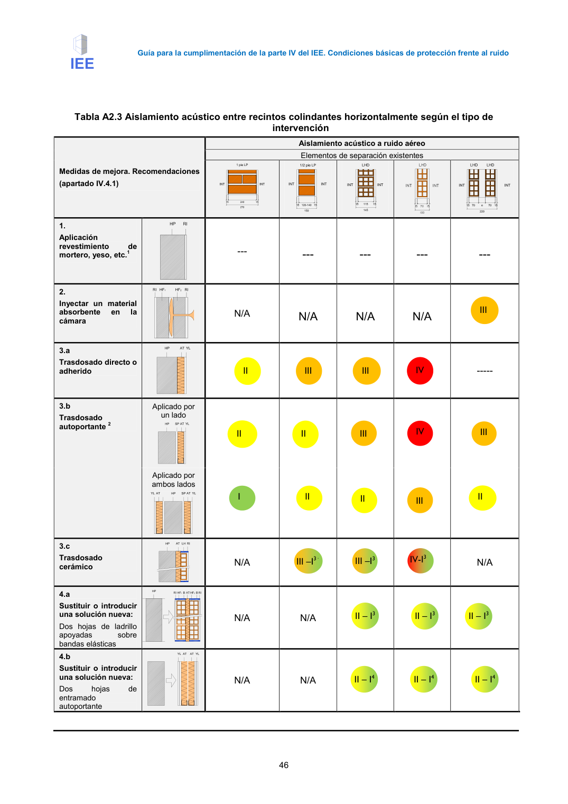

GUIA · intervención · versión 2016-11-01 · capa guia
Formatos: JSON compacto · Markdown · PDF fuente
Ámbito del documento · texto del ámbito · documento y tablas
Tipo: tablas, figuras · nivel 3 · sección estimada: Anejo 2 Valoración del aislamiento acústico de elementos de separación verticales y sus · padre: a0035
intervención Medidas de mejora. Recomendaciones (apartado IV.4.1) Aislamiento acústico a ruido aéreo Elementos de separación existentes 1. Aplicación revestimiento de mortero, yeso, etc.1 --- --- --- --- --- 2. Inyectar un material absorbente en la cámara N/A

PDF fuente redistribuible: copia fiel enlazada en esta página (SHA256 verificado).